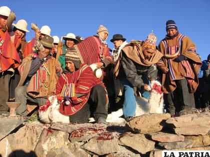

Org. Social
La base sobre la que descansaba toda la sociedad Quechua era el AYLLU que estaba formado por diferentes grupos de familias que rendían culto a una misma huaca y poblaban un mismo territorio. Los ayllus reales formados por la decadencia de cada uno de los Quechuas y se llamaban panacas. Dentro de cada panaca y ayllu había tres niveles sociales denominado: collana, payan y cayao.
La clases sociales del Quechua eran marcadísimas a la cabeza estaban los que tenían sangre real se encontraban el Inca, la familia real y la nobleza (orejones) con privilegios; después se encontraban la clase sacerdotal a la cabeza se encontraba el Vallac- Uma; posteriormente se encontraba los guerreros y finalmente el pueblo donde se encontraban los artesanos, agricultores y trabajadores. También existían la clase servidumbre que eran los Yanaconas con obligación de servir al pueblo en las minas, las construcciones, etc.
Los mitimaes eran miembros para ser trasladados de un lugar a otro según las exigencias del Estado.